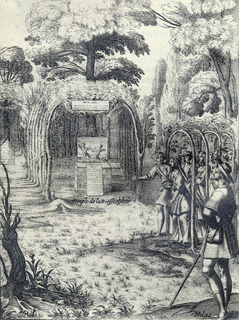
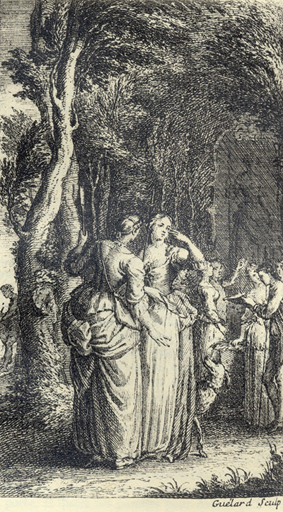

Tableaux analytiquesIndex des noms propres Tableaux des personnages Répertoire
(autres noms propres)Glossaire Dictionnaire des fréquences Notes
Topographie du sitePlan du site Index de l'apparat critique Bibliographie Liens externes Liens vers Gallica
SupportGuide de la navigation FAQ Nouveautés Remerciements Auteur du site
Effacer les témoins
(cookies)X
Accueil Préface Choix éditoriaux Les Quatrièmes parties Les
IntroductionsAstréesposthumes L'Édition de Vaganay Présentation des textes Pleins feux sur
L'Astrée
Lecture de
L'AstréeI
Éd. de référenceepartie 1621 II
epartie 1621 III
epartie 1621 IV
epartie 1624
I
Éd. préliminaireepartie 1607 II
epartie 1610 III
epartie 1619
Éd. fonctionnelleavec gravuresI
epartie II
epartie III
epartie IV
epartie
en Word
Éd. téléchargeableen Word
Chronologie historique
Résumédes intrigues
APPARAT CRITIQUEÉvolution de
Le romanL'AstréeVariantes confrontées Variantes, I
epartie Variantes, II
epartie Variantes, III
epartie Analyse des illustrations Parallèles suggérés Résumé des intrigues Chronologie historique Témoignages Du Crozet Sorel Guéret Poèmes de Lingendes
Biographie Biographes, critiques Événements Généalogie Testament Inventaire Héritages Poèmes Épîtres Lettres Remarques
Le romanciersur Malherbe
Bibliographie Liens externes Liens vers Gallica Cartothèque Galerie de portraits Film d'Eric Rohmer Partitions d'A. Naigeon Photos du Forez
Ressources

«
@
»
X

avancéeRecherche ciblée Fils d'Arianne Hyperbase (É. Brunet) Accès aux pages/folios Concordances-Vaganay
police condenséeL'AstréeRésumé du roman Chronologie historique Choix éditoriaux Présentation des textes Évolution Illustrations
 Annexe
Annexe

L'Astrée
L'Astrée fonctionnelle
L'Astrée

Livre 4

Livre 6
L'Astrée
d'Honoré d'Urfé
Deuxième partie
Livre 5

Conduits par Silvandre, Diane et les bergers s'approchent du temple d'Astrée
et du tableau des deux Amours (II, 5, 275).
Au premier plan, Hylas reste immobile (II, 5, 277)
L'AstréeII, 5. Édition Vaganay**, 1925Conduits par Silvandre, Diane et les bergers s'approchent du temple d'Astrée
et du tableau des deux Amours (II, 5, 275).
Au premier plan, Hylas reste immobile (II, 5, 277)
(Voir Illustrations)

Gravure signée Guélard
Au fond, la représentation de la déesse Astrée
Astrée lit un texte et pleure devant Phillis et Mélampe
Les autres bergers se passent des papiers (II, 5, 297)
L'AstréeII, 5. Édition Vaganay**, 1925Gravure signée Guélard
Au fond, la représentation de la déesse Astrée
Astrée lit un texte et pleure devant Phillis et Mélampe
Les autres bergers se passent des papiers (II, 5, 297)
(Voir Illustrations)
Édition de 1610, p. 271.
Édition de Vaganay, p. 173.
Première table.
Qui veut être parfait Amant,
Il faut qu'il aime infiniment.
L'extrême Amour seule en est digne,
Aussi la médiocrité,
De trahison est plutôt signe,
Que non pas de fidélité.
Deuxième table.
Qu'il n'aime jamais qu'en un lieu,
Et que cet Amour soit un Dieu
Qu'il adore pour toute chose
η.
Et n'ayant jamais qu'un objet,
Tous les bonheurs qu'il se propose
Soient pour cet unique sujet.
Troisième table.
Quatrième table.
Que s'il a le soin d'être mieux,
Ce ne soit que pour les beaux yeux
Dont son Amour a pris naissance.
S'il souhaite plus de bonheur,
Ce ne soit que pour l'espérance
Qu'elle en recevra plus d'honneur.
Cinquième table.
Telle soit son affection,
Que même la possession
De ce qu'il désire en son âme,
S'il doit l'acheter au mépris
De son honneur ou de sa Dame,
Lui soit moins chère que ce prix.
Sixième table.
Septième table.
Huitième table.
Qu'épris d'un Amour violent,
Il aille sans cesse brûlant,
Et qu'il languisse et qu'il soupire
Entre la vie et le trépas,
Sans toutefois qu'il puisse dire
Ce qu'il veut, ou qu'il ne veut pas.
Neuvième table.
Méprisant son propre séjour,
Son âme aille vivre d'Amour
Au sein de celle qu'il adore,
Et qu'en elle ainsi transformé,
Tout ce qu'elle aime et qu'elle honore,
Soit aussi de lui bien aimé.
Dixième table.
Et qu'il y soit de la pensée,
Si le corps en est séparé.
Onzième table.
Que la perte de la raison,
Que les liens et la prison,
Pour elle en son âme il chérisse ;
Et se plaise à s'y renfermer
Sans attendre de son service
Que le seul honneur de l'aimer.
Douzième table.
Qu'il ne puisse jamais penser
Que son Amour doive passer.
Qui d'autre sorte le conseille
Soit pour ennemi réputé,
Car c'est de
η
lui prêter l'oreille,
Crime de lèse-majesté.
naturel, mais entortillé de cette
sorte par artifice. Le tableau représentait une
Bergère de sa hauteur, et au plus haut du tableau il
y avait : C'est la Déesse Astrée, et au bas on
voyait ce vers :
Plus digne de nos vœux que nos vœux ne sont d'elle.
Privé de mon vrai bien, ce bien faux me soulage.
Que, privé du vrai bien, ce bien faux me soulage.
DIALOGUE.
SUR LES YEUX D'UN PORTRAIT.
STANCES.
Privé de mon vrai bien, ce bien faux me soulage
Mais pourquoi fuirons-nous ? la fuite en est bien
vaine,
Si déjà bien avant dans le cœur nous portons,
De ces yeux vrais ou faux, la blessure certaine.
TABLES D'AMOUR
falsifiées par l'inconstant
Hylas.
Première table.
Deuxième table.
Qu'il aime et serve en divers lieux,
Et qu'il tourne toujours les yeux,
Dessus quelque nouvelle chose,
Aimant ainsi divers objets,
Que les bonheurs qu'il se propose,
Soient aussi pour divers sujets.
Troisième table.
Ne bornant jamais ses désirs,
Qu'il cherche partout des plaisirs,
Faisant toujours amour nouvelle,
Voire qu'il cesse de l'aimer
Sinon que d'autant qu'aimé d'elle,
Pour lui seul il doit l'estimer.
Quatrième table.
Que s'il a du soin d'être mieux,
Ce soit pour plaire à tous les yeux
Des belles de sa connaissance.
S'il souhaite quelque bonheur,
Ce ne soit que pour l'espérance
D'être plus absolu Seigneur.
Cinquième table.
Telle soit son affection,
Que même la possession
De ce qu'il désire en son âme,
S'il doit l'acheter au mépris
De son honneur ou de sa Dame,
Il la veuille bien à ce prix.
Sixième table.
Pour sujet qui se vienne offrir,
Qu'il ne puisse jamais souffrir
Querelle pour la chose aimée.
Que si devant lui par dédain,
D'un médisant elle est blâmée,
Qu'il y consente tout soudain.
Septième table.
Que l'Amour permette en effet
Que son jugement soit parfait,
Et que dans son âme il l'estime,
Toute telle qu'elle sera,
Condamnant comme d'un grand crime
Celui qui plus l'estimera.
Huitième table.
Qu'épris d'un Amour assez lent,
Il n'aille sans cesse brûlant,
Ni qu'il languisse ou qu'il soupire
Entre la vie et le trépas ;
Mais que toujours il puisse dire
Ce qu'il veut, ou qu'il ne veut pas.
Neuvième table.
Estimant son propre séjour,
Son âme en soi vive d'Amour,
Et non en celle qu'il adore,
Sans qu'en elle étant transformé,
Tout ce qu'elle aime et qu'elle honore,
Soit aussi de lui bien aimé.
Dixième table.
Qu'il ne tienne pas pour perdus,
Les jours loin d'elle dépendus,
Si la peine n'est surpassée
Par le bien qu'il s'est figuré,
Mais se contente en sa pensée,
Si le corps en est séparé.
Onzième table.
Qu'il se remette à la raison,
Que ses liens et sa prison
Pour elle bientôt il finisse.
Méprisant de s'y renfermer,
S'il n'attend rien de son service
Que le vain honneur de l'aimer.
Douzième table.
Qu'il ne puisse jamais penser
Que telle amour n'ait à passer.
Qui d'autre sorte le conseille,
Soit pour ennemi réputé,
Car c'est de lui prêter l'oreille
Crime de lèse-Majesté.
Livre 4
Livre 6
Référence électronique :
document.write('"'+document.title.substr(0, document.title.indexOf("-")-1)+'". '+"Dernière mise à jour : "+ExtractDate(document.lastModified)+".")Deux visages de L'Astrée.
©2005-2020 E. Henein.
URL :
var today = new Date();
document.write(document.URL +
"<br>Consulté le : " + today.toLocaleDateString("fr-FR") + ".");
var _gaq = _gaq || [];
_gaq.push(['_setAccount', 'UA-19288475-1']);
_gaq.push(['_trackPageview']);
(function() {
var ga = document.createElement('script'); ga.type = 'text/javascript'; ga.async = true;
ga.src = ('https:' == document.location.protocol ? 'https://ssl' : 'http://www') + '.google-analytics.com/ga.js';
var s = document.getElementsByTagName('script')[0]; s.parentNode.insertBefore(ga, s);
})();
Deux visages de L'Astrée.
©2005-2019 Eglal Henein. Creative Commons 4 
Édition critique de la première partie de L'Astrée (1607, 1621)
mise en ligne le 9 avril 2007
Édition critique de la deuxième partie de L'Astrée (1610, 1621)
mise en ligne le 10 octobre 2010
Édition critique de la troisième partie de L'Astrée (1619, 1621)
mise en ligne le 1er novembre 2014
Édition critique de la quatrième partie de L'Astrée (1624)
mise en ligne le 15 janvier 2019
document.write("Dernière mise à jour : "+ExtractDate(document.lastModified))